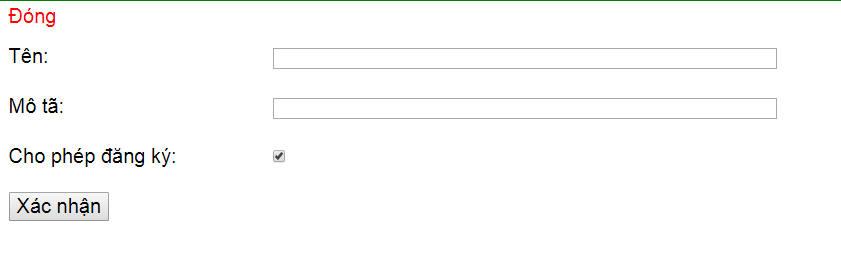
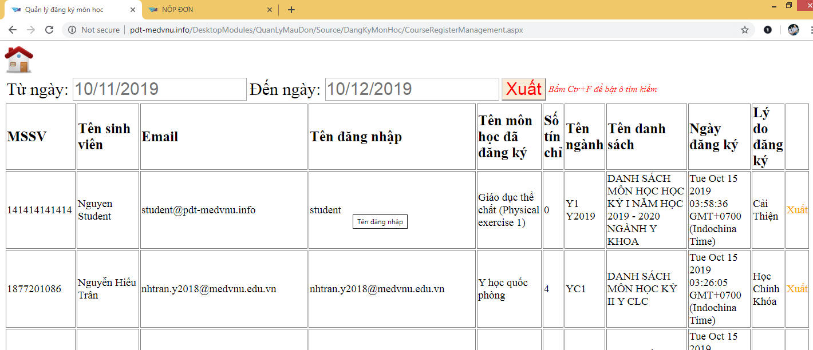

1. Vào trang PDT:
2. Đăng nhập:
Nhấp nút đăng nhập để đăng nhập
Đăng nhập với tài khoản ssofficer
3. Vào trang Nộp Đơn:
Nhấp nút Quản lý Đăng Ký và Môn Học
4. Thêm danh sách môn học mới:
Nhấp nút Tạo Mới
Chon mục "Danh sách môn học" trong dropdownlist. Sau đó nhấp nút "Chọn".

Điền thông tin danh sách môn học. Ở đây tôi điền ví dụ là "Danh sách môn học mới"
- Nhấp chọn ô "Cho phép đăng ký" nếu bạn muốn danh sách mới này được hiện thị đến sinh viên.
Bấm "Xác nhận"
Ngay sau đó danh sách môn học mới được khởi tạo
4. Thêm "ngành mới" vào danh sách môn học:
Nhấp nút Tạo Mới. Chọn mục "Ngành học" từ dropdownlist. Sau đó nhấp "Chọn"
Chọn mục "Danh sách môn học mới" từ dropdownlist mà đã được bạn khởi tạo ở phần trên
Ở đây tôi điền tên "Ngành học mới"
Điền đầy đủ thông tin và nhấp "Xác nhận". "Ngành học mới" được thêm vào "Danh sách môn học mới".
5. Thêm "Môn học mới" vào Ngành học mới:
Nhấp nút Tạo Mới. Chọn mục "Môn học" từ dropdownlist. Sau đó nhấp "Chọn"
Sau đó chọn tiếp "Danh sách môn học mới" từ drodownlist. Sau đó nhấp "Chọn"
Điền đầy đủ thông tin như sau:
Tên: Môn học mới
Ngành học: Chọn ngành học mới vừa được khởi tạo ở phần trên.
Số tín chỉ: 10
Điền ngày kết thúc đăng ký nếu muốn môn học này được giới hạn bởi ngày đăng ký
Nhấp nút Xác nhân sau khi hoàn tất.

6. Trang đăng ký môn học
Trên menu, chon mục "Đăng ký môn học"
Danh sách, ngành học, và môn học mới đã được sẵn sàng cho việc đăng ký
7. Xem các môn học mình đã đăng ký
Nhấp vào nút "Xem các môn đã đăng ký" để xem các môn học mình đã đăng ký.
8. Xem danh sách các sinh viên đã đăng ký
Nhấp vào nút "Xem danh sách các sinh viên đã đăng ký"
Danh sách các sinh viên đã đăng ký:

9. Tìm kiếm thông tin đăng ký của từng sinh viên
Trên trang "Xem danh sách các sinh viên đã đăng ký". Nhấp tổ hợp Ctr+F trên bàn phím để mở hộp tìm kiếm:
Trên hộp tìm kiếm. Chon kiểu tìm trên dropdownlist bên phải và nhập giá trị tìm kiếm vào ô bên trái. Sau đó nhấp nút "Tim kiếm" để bắt đầu tìm kiếm:
Kết quả tìm kiếm sẽ hiện ra:
10. Xuất thông tin đăng ký của sinh viên ra file exel
Trên trang "Xem danh sách các sinh viên đã đăng ký". Điền ngày bắt đầu và kết thúc, sau đó nhấp nút Xuất để xuất file excel:
Lưu file excel lại

Mở tệp tin excel
Note: bạn cũng có thể xuất file excel của từng sinh viên bằng việc nhấp nút Xuất cùng hàng dữ liệu. Thông tin của các môn học được đăng ký bởi sinh viên đăng ký sẽ được xuất ra file excel.